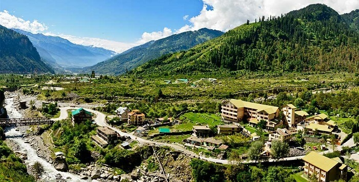

HIMACHAL
Tour Itinerary
Day 1: Arrival in Shimla

- Take a cab from the airport/Railway station to hotel.
- In the hotel, take hand-over of documents regarding the tour by the representative/driver.
- Reach Shimla perched at 7000 feet above sea level.
- Upon arrival, check-in the hotel and spend the rest of the day at leisure.
- In the evening, take a walk to the Mall Road.
- Overnight stay at the hotel.
Day 2: Shimla Local Sightseeing and Visit to Kufri

- After breakfast, go for local sightseeing of Shimla.
- Later, start for an excursion trip to Kufri.
- Enroute stop for a while at the beautiful Christ Church.
- Return to the hotel in the evening.
- Overnight stay at the hotel.
Day 3: Transfer to Manali

- After breakfast, drive to Manali.
- On arrival, check-in at the hotel.
- Spend the day at leisure.
- Dinner and overnight stay at the hotel in Manali.
Day 4: Manali Local Sightseeing

- Have breakfast at the hotel and leave for local sightseeing.
- Visit the 450-year-old Hadimba Mata temple situated in a dense forest.
- Explore Van Vihar, Mall Road, Tibetan Monastery, and handicraft center.
- Evening time is free. The guests can walk up to the nearby village Vashisht known for its hot sulphur springs.
- Dinner and overnight stay at the hotel in Manali.
Day 5: Manali to Solang Valley

- Visit Solang Valley.
- In the evening, return to the hotel.
- Dinner and overnight stay at the hotel.
Day 6: Departure
- After breakfast, transfer to the airport for the journey back home.